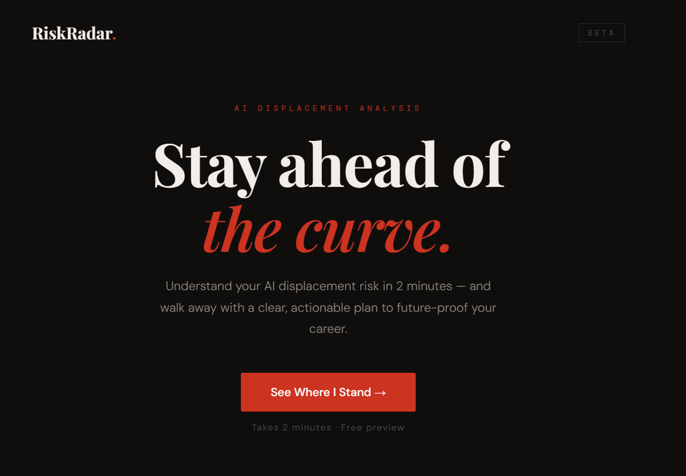
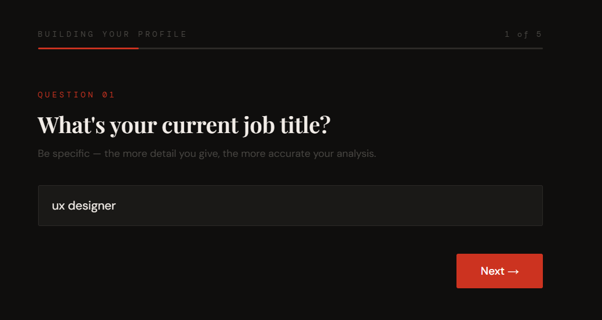
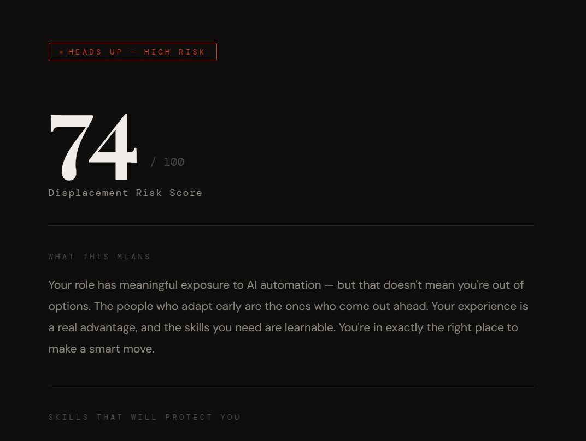
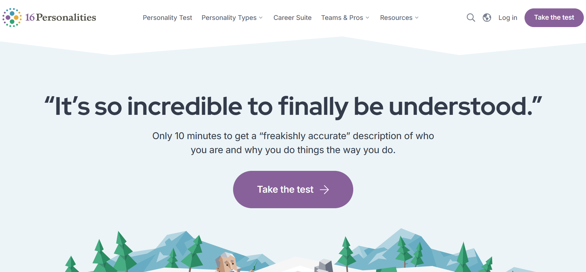
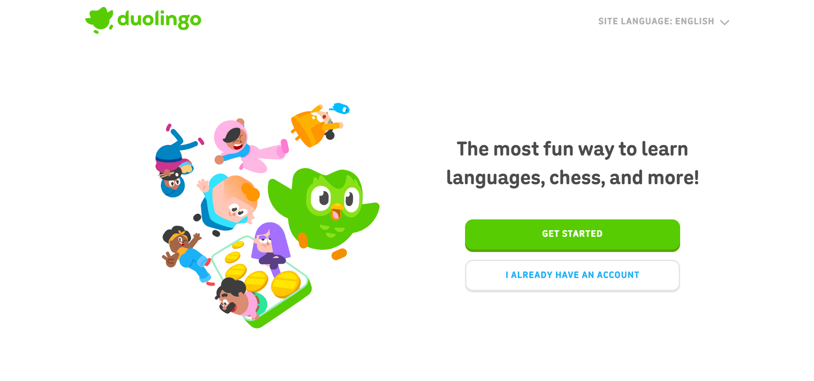
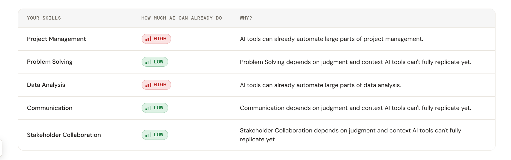
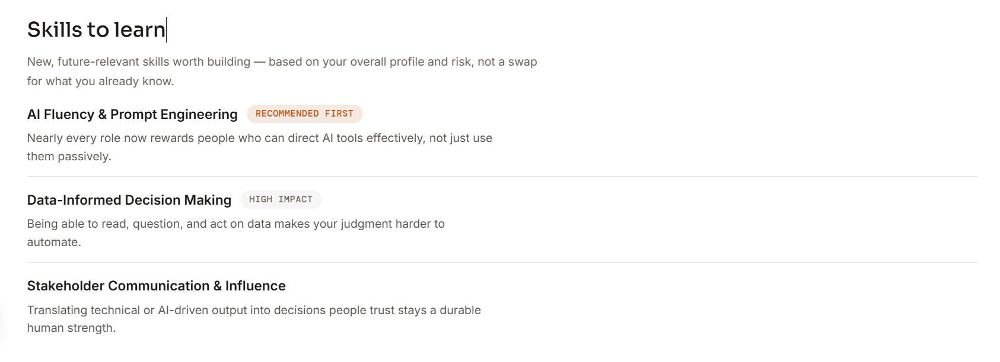

Building a product to help people understand where AI is taking their career
People know AI is changing work. They don't know what it means for their own career. Shiftlyn tells them where they stand, and what to do next.

The idea
A gap I found while researching, and the smallest product that could test it.
Shiftlyn began as an article, not a product.
I was writing about how AI could reshape India's job market. The research kept pointing to the same gap.
I'd felt that AI anxiety myself that spring. Now I was seeing it in more and more people around me.
People knew AI was changing work. Almost nobody knew what it meant for their own career.
Could a product tell people where they stand, and what to do next?
That question became Shiftlyn.
Narrowing the problem
Before building anything, I checked the problem was worth solving. "AI affects everyone" is true, but you can't design for everyone.
Two findings made it sharper:
- Guidance, not content. People didn't need another course library. They needed to know what to learn, and why.
- A clear first audience. Students and early-career professionals had the most to gain and the most reason to act.
That gave me a clear audience, and a clear first bet.
Prove the value first, then build around it.
I didn't want to build the whole ecosystem at once. I started with two sets of goals: one for users, one for the business.
User goal
- Know which skills AI puts at risk
- Choose a direction: upskill, adapt or pivot
- Stay current and connected with the AI market
Business goal
- Show people where they stand, and guide them
- Hold healthy conversion and retention
- Decisions backed by product data
So the MVP was deliberately small: four steps, built to answer one question.
The question the MVP had to answer
Will people find value in understanding their AI readiness? If yes, I could build the rest around it.



Initial testing
Users wanted a plan, not just a diagnosis.
I tested the MVP with about 20–25 users, looking for usefulness, not just usability.
What they liked
- Personalised recommendations
- Knowing their AI readiness
- Clearer career direction
What they wanted more of
- Learning resources
- Deeper recommendations
- AI updates for their profession
The hard problems weren't on the screen
Very quickly, I realised the product had bigger questions than the UI.
- How do I activate users?They need to reach value quickly. Ch. 03
- How do I improve conversion?Attention spans are short, and trust has to exist before anyone pays. Ch. 04
- Where should login and purchase happen?In B2C products, login is where the most people drop off. Ch. 05
- How do people arrive?The landing page is where conversion starts. Ch. 06
- How do I create retention?The main problem: a report can be useful once, but why would someone return? Ch. 07
- How do I control product cost?Every report runs on a paid AI API, on top of hosting and data costs.
These questions shaped the product more than the screens did. The rest of this story answers them, one by one.
Getting people in
Activation, conversion, login friction, and the landing page that brings people in.
The results page was the product.
Activation came first. If users didn't reach value fast, nothing else would matter, so I studied products that do this well.
16Personalities makes a short test feel personal. Duolingo delivers value before it asks for commitment.


Both put value before commitment, so I focused on Shiftlyn's core first. That led to the biggest discovery in the project.
The quiz only collects data. The value lands on the results page, and users arrive there with one question:
"What does this score mean for me?"
From the first report to the current design
Getting that progression right took iterations. The first full report leaned on prose: the data was right, but reading it took too much work.

Informative, but hard to scan.
- 1Long paragraphs
Users skimmed them, then asked what they had just answered.
- 2Too many visual systems
A multicolour gauge plus a legend for one risk level.
The current design splits the same page into two states: what users see before they pay, and what unlocks after.

Score, risk and reasoning are free. The roadmap sits behind the paywall.

The reasoning became a skill-level table.
- 1Skill → AI exposure → why
One row per skill, readable at a glance.
- 2Clear exposure states
LOW / MEDIUM / HIGH, plus a written risk verdict.
The key decision: structure over prose
Each skill got its own row. The page now answers three questions at a glance:
What is at risk?
Why is it at risk?
What should I work on?
Every recommendation carries evidence and a priority, so it reads as a plan, not generic AI advice.


The paywall comes after the payoff.
The result now delivered value. Then came the harder ask: payment.
This is where conversion happens. The free result before payment gives the final push, but conversion really starts from the very first screen of the application.
Asking for payment before users understood their result would hurt it. So I drew the line between knowing and doing.
- Score
- Risk level
- Reasoning
- Skill exposure
- Skill roadmap
- Career pivot paths
- Live jobs
- Courses
- Deeper guidance
The diagnosis is free. The action plan is paid.
That gave the conversion moment a clear reason to exist. Next, I looked at where people could drop off on the way.
Where conversion could drop off
Landing → Quiz → Results → Purchase → Login → Dashboard
Every step is a chance to lose someone. These were the risky ones:
- Landing page to quiz. People leave if they don't trust the product enough to start.
- Quiz to results. A long or confusing quiz makes people give up halfway.
- Results to purchase. People hesitate if the free result doesn't feel worth paying more for.
- Purchase to login. They've already paid, and a slow login can still make them quit.
The last one worried me most. Losing someone after they've paid hurts the most, so login became a conversion problem.
Where should login happen?
Where to place the login: after the results, before payment, or after payment?
I did a thorough study of login patterns to decide.
| Pattern | Main issue | Fit after payment |
|---|---|---|
| Email OTP | Delivery friction | Weak |
| Magic link | Still depends on email | Weak |
| SMS OTP | Better delivery, added cost | Good fallback |
| WhatsApp OTP | Low friction, strong local fit | Good fallback |
| Google / Apple | One-tap access | Strong |
| Password | Extra setup and reset friction | Fallback |
| Post-payment passwordless authentication | Unlocks the report directly after payment | Strongest |
Authentication: delay it, then keep it passwordless
For Shiftlyn, I separated conversion from authentication:
Quiz → Payment → Email OTP → Report access
I avoided login before payment because forced account creation adds checkout friction. Baymard reports 19% of shoppers abandon checkout when forced to create an account. (Baymard Institute)
When the user returns as an existing user, they verify the same purchase email with an Email OTP. This confirms ownership of the email and creates their authenticated session, without passwords, OAuth choices, or resets.
Email OTP is an established passwordless authentication method supported by platforms such as Microsoft Entra, Amazon Cognito, and ServiceNow. (GitHub)
Design principle
Don't make users authenticate before they have value. Authenticate them when access to that value matters.
Once people reached their result, the product converted. The next question was how they arrived in the first place.
The landing page had to earn trust.
With the result and the paid unlock working, I moved to the top of the funnel. The landing page is where conversion actually starts.
AI career risk is personal. Visitors aren't only asking what Shiftlyn is. They're asking whether to trust it.
So I treated the landing page as part of the product funnel, not just marketing, and built it on C-TRUST-A.

- CClarity
One message, one CTA.
- TTransparency
Time, cost and what you get, upfront.
- RReliability
Credible research, not unsupported claims.
- UUnderstandability
The product in simple steps.
- SSocial proof
Relevant feedback from real users.
- TTrust
Answers to the likely doubts.
- AAction
One clear next step.
Activation and conversion now worked. But a bigger problem remained: what happens after the report is read?
Keeping them
Retention loops, the dashboard, and how Shiftlyn makes money.
A report is useful once. Careers keep changing.
A user could finish the assessment, read the report, and leave. That's a retention problem.
To be honest, this was the hardest part of the project.
I went back to the user's side: what would actually help their career over time, enough to make them stay?
The pattern was hard to ignore. Guidance products and job portals lose users the moment they get a job.
The report stands still, but the market, jobs and skills around it keep changing.
What would make someone open Shiftlyn again?
So I stopped thinking in features and started designing retention loops: surfaces that create new value on their own schedule.
How users keep coming back
The report shouldn't be the end. After it, users get a dashboard to keep track of their field in the AI market.
The dashboard is the retention layer
So why stop users at the result? The loops needed a home. The dashboard pulls them into one place: current risk, how it moved, skill progress, jobs, courses and re-runs.

Phase 1 shipped four loops first: Job Market Radar, Communities & Events, niche AI jobs and report re-runs.


Why Shiftlyn went freemium.
With retention in place, the next question was how Shiftlyn would make money.
I explored four revenue models against one goal: earn revenue without hurting the product.
The decision: freemium
I chose freemium because retention mattered more.
A one-time purchase would have hurt retention. A subscription created conversion friction.
Freemium avoided both: the core stays free, and premium features become the point of conversion.
What it became
Where Shiftlyn landed.
From a readiness check to a career product.
Looking back, the biggest changes weren't visual polish. They were product decisions.
Shiftlyn went from an MVP to an end-to-end product, designed around conversion and retention, with decisions backed by data.
What I'd carry forward
The quiz collects data. The value lives in the result.
Anxious people scan. Structured information made the product easier to understand.
Trust, clarity and the result itself decide whether someone pays.
The wrong authentication pattern can break an otherwise successful payment flow.
A one-time score gives nobody a reason to return. Recurring value does.
Pricing, AI cost, authentication and acquisition all shaped the experience.
Shiftlyn started as a simple readiness check. It became a product built around a much bigger question:
"AI is changing my career. What should I do next?"
The assessment tells users where they stand. The rest of Shiftlyn helps them act on it.